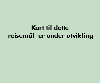
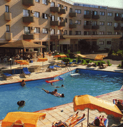

Tjæreborg Center og Hoteller på Kypros

| 
|
|
h3>TJÆREBORG CENTER: Karas Beach
Et lite og hyggelig Tjæreborg Center i rolige omgivelser, beliggende like ved en liten bukt med sandstrand. For alle som setter pris på en ferie i hyggelige omgivelser med aktiviteter for store og små.
|
|
Karas Beach
Karas Beach er et forholdsvis lite center hvor man fort blir dus med omgivelsene og de andre gjestene. Centret byr på aktiviteter for alle aldersgrupper: Barna har det morsomt i Tjæreborgs Teddy Club hvor det f.eks. er skattejakt, forskjellige leker og morsomme konkurranser. De voksne har det heller ikke kjedelig. For morgenfuglene er det morgengymnastikk, og i løpet av dagen er det andre innslag som f.eks. vannpolo, boccia eller crazy golf. På slutten av ettermiddagen er det "happy hour" i baren hvor vi møtes for å spille bingo og er med på gjettekonkurranser. Etter en dag med mange aktiviteter er restauranten et hyggelig samlingspunkt med underholdning og show et par ganger i uken for hele familien. På Karas Beach er det gressplener hvor barna kan få utfolde seg, og hvor du kan sole deg og slappe av i fred og ro. Fra centret er det ikke langt til de lokale tavernaer og forretninger. Tjæreborg Center henvender seg til alle aldersgrupper, og du bestemmer selv tempoet. Ønsker du å se mer av øya - enten på Tjæreborgs turer eller på egen hånd, kan du kontakte Tjæreborgs Servicekontor som har åpent det meste av uken. Her hjelper guidene med praktiske råd om reisemålet og gir tips om alle de mulighetene du har for å få en perfekt ferie.

KARAS BEACH

|
| Strand | 300 m | Restaurant | Ja | Etasjer | 4
|
| Supermarked | Ja | Bar | Ja | Heis | Ja
|
| Til buss | 300 m | TV-rom | Ja | Senger | 222
|
| Sentrum | 2,4 km | Salong | Ja | Tlf. i leil./rom | Ja
|
| Basseng | Ja | Resepsjon | Ja | TV i leil./rom | -
|
| Barnebass. | Ja | Deponering | Ja | Kjøleskap | Ja
|
| Solterrasse | Ja | Elektrisitet | 220 v | Byggeår | 1988/90
|
LEILIGHETER KATEGORI 3+
Karas Beach er et hyggelig, lite Tjæreborg Center med en avslappet og
familiær atmosfære, velegnet for barnefamilier. Anlegget som består av to bygninger, er beliggende i rolige omgivelser, kun med lokaltrafikk, og nær en grovkornet sandstrand og et vannsportsenter. Det finnes to bassengområder, begge med separat barnebasseng, samt gratis solstoler og parasoller. Anlegget har også hage og lekeplass, tennis, volleyball og squash. I blokk B finnes det en stor kombinert resepsjon og salong med TV, samt bar/poolbar. I tillegg er det restaurant/ snackbar med servering innendørs og utendørs ved bassenget, sauna (mot betaling), og spillemaskiner. I blokk A finnes det en kombinert resepsjon og salong, bar med TV og direkte utgang til bassenget. De fleste centeraktiviteter foregår ved blokk B. Leilighetene er enkle, men pent innredet, og alle har kjøkkenkrok og aircondition.
Adr.: Pernera, Paralimini, Kypros.
Tlf.: 00 357 3/83 Fax: 00 357 3/83 17 68. (Blokk A)
Rengjøring 5 ganger i uken. Blokk A har kun resepsjonsservice på dagtid, og man henvises der-etter til resepsjonen i blokk B, ca. 100 derfra.
HOTELLER PÅ KYPROS
NAPIA STAR
| Strand | 800 m | Restaurant | Ja | Etasjer | 2
|
| Supermarked | 50 m | Bar | Ja | Heis | Ja
|
| Til buss | 30 m | TV-rom | Ja | Senger | 416
|
| Sentrum | 100 m | Salong | Ja | Tlf. i leil./rom | Ja
|
| Basseng | Ja | Resepsjon | Ja | TV i leil./rom | Ja
|
| Barnebass. | Ja | Deponering | Ja | Kjøleskap | Ja
|
| Solterrasse | Ja | Elektrisitet | 220 v | Byggeår | 1988
|
HOTELL KATEGORI 3+
Et flott hotell for folk i alle aldersgrupper. Hotellet er beliggende i sentrum av Ayia Napa i et område med lokaltrafikk. Hotellet har bl.a. et stort bassengområde med terrasse, gratis solstoler og parasoller, samt poolbar. Det finnes også et innendørs basseng, diskotek, 3 barer, pub, snackbar, suvenirbutikk, utendørs a la carte restaurant og hage. Det er dans et par ganger i uken. Hotellet har dessuten en egen helseklubb med sauna, solarium, massasjerom og jacuzzi. Bordtennis og tennis.
Værelsene er pene og har aircondition.
Adr.: Hotell Napia Star, P.O. Box 305, Ayia Napa, Kypros.
Tlf.: 00 357 3/72 15 40. Fax: 00 357 3/72 16 71.
CHRISTABELLE
| Strand | 1,7 km | Restaurant | - | Etasjer | 2-4
|
| Supermarked | 10 m | Bar | Ja | Heis | -
|
| Til buss | 400 m | TV-rom | Ja | Senger | 176
|
| Sentrum | 500 m | Salong | - | Tlf. i leil./rom | -
|
| Basseng | Ja | Resepsjon | Ja | TV i leil./rom | -
|
| Barnebass. | Ja | Deponering | Ja | Kjøleskap | Ja
|
| Solterrasse | Ja | Elektrisitet | 220 v | Byggeår | 1980/86
|
LEILIGHETER KATEGORI 2+
Hyggelig, familiedrevet leilighetsanlegg bestående av 3 bygninger, hver i 2 - 4 etasjer. Anlegget har en koselig atmosfære og et barnevennlig miljø, men med mange unge mennesker i høysesongen. Christabelle er beliggende i et hotellområde med lokaltrafikk. Ved bassenget er det gratis solstoler og parasoller, samt poolbar. Alle leilighetene har kjøkken-krok, og aircondition mot betaling direkte til hotellet. Det er telefon i alle leiligheter unntagen i anneksbygningene.
Adr.: Post Box 53, Ayia Napa.
Tlf.: 00 357 3/72 18 60. Fax: 00 357 3/72 19 65..
Rengjøring 6 ganger i uken. Christabelle anneks, kategori 2, består av flere
bygninger beliggende 50-150 m fra hovedbygningen hvor resepsjonen finnes.
AGRINO
| Strand | 1 km | Restaurant | - | Etasjer | 3
|
| Supermarked | 20 m | Bar | Ja | Heis | -
|
| Til buss | 150 m | TV-rom | Ja | Senger | 46
|
| Sentrum | 200 m | Salong | - | Tlf. i leil./rom | Ja
|
| Basseng | Ja | Resepsjon | Ja | TV i leil./rom | -
|
| Barnebass. | - | Deponering | Ja | Kjøleskap | Ja
|
| Solterrasse | Ja | Elektrisitet | 220 v | Byggeår | 1986/89
|
LEILIGHETER KATEGORI 2+
Leilighetsanlegg, velegnet for yngre mennesker som ønsker en god og enkel innkvartering, og som ikke har bruk for mange fellesfasiliteter. Agrino er beliggende i et byområde med lokaltrafikk, kun få minutters gange fra Ayia Napas natteliv og forretninger. Det finnes pool- og snackbar, samt gratis solstoler ved svømmebassenget. Alle leiligheter har kjøkkenkrok.
Adr.: P.O. Box 61, Ayia Napa, Kypros.
Tlf.: 00 357 3/72 34 34. Fax: 00 357 3/72 34 35.
Dessuten tlf. og fax: 00 30 245/22 144.
Resepsjonsservice på dagtid. Rengjøring 6 ganger i uken. Anlegget er uegnet for folk med gangbesvær p.g.a. mange trapper. Trafikk- og musikkstøy.
![[Tjæreborg-Hjemmeside]](http:img/icon.gif)
![[SN Horisont]](http://www.sn.no/img/horisont.gif)